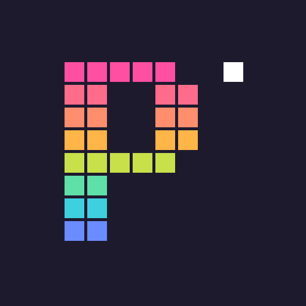
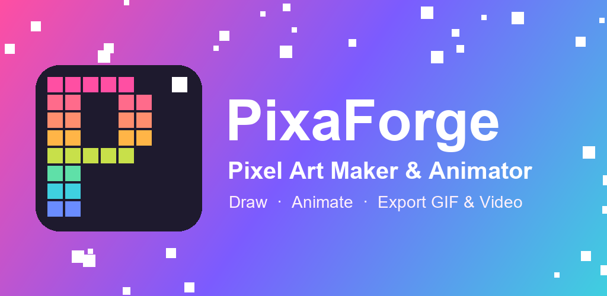

PixaForge
Pixel art maker & animator for Android, by Afton Studio.
- 16 pixel art tools: pixel-perfect pencil, dither, shading, gradients, selections, symmetry
- Layers, palettes (PICO-8, Game Boy, Endesga 32 and more) and pro effects
- Animation Studio with timeline, per-frame timing, onion skin and tweening
- Export PNG, GIF, MP4 video, animated PNG, sprite sheets with JSON and SVG
- Turn any photo into pixel art, or trace over a reference photo
